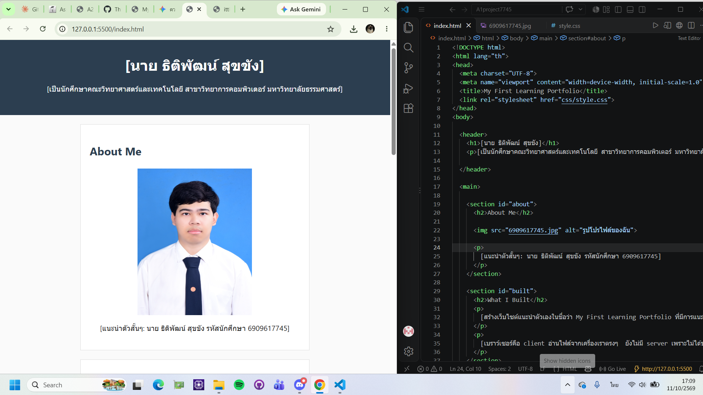
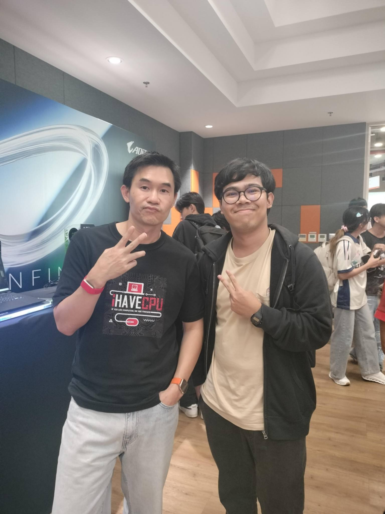

About Me
 [นาย ธิติพัฒน์ สุขขัง รหัสนักศึกษา 6909617745]
[นาย ธิติพัฒน์ สุขขัง รหัสนักศึกษา 6909617745]
คณะวิทยาศาสตร์และเทคโนโลยี สาขาวิทยาการคอมพิวเตอร์ มหาวิทยาลัยธรรมศาสตร์
[นาย ธิติพัฒน์ สุขขัง รหัสนักศึกษา 6909617745]
คณะวิทยาศาสตร์และเทคโนโลยี สาขาวิทยาการคอมพิวเตอร์ มหาวิทยาลัยธรรมศาสตร์

Type : Course Assignment
Date : 30 Aug 2026
Role : Individual Developer
Description : พัฒนาเขียนเว็บไซต์ Portfolio สั้นๆด้วย HTML และ CSS
Skills : HTML, CSS, Semantic HTML
Reflection : ตอนทำงาน A1 ได้ฝึกเขียนด้วย HTML และ CSS พร้อมtestหน้าตาเว็บไปด้วย ได้ลองผิดลองถูก มีปัญหานกึไม่ออกว่าต้องใช้คำสั่งอะไรกับโค้ดCSS ถึงอยากให้ได้หน้าตาตรงจินตนการ แต่พอลองแก้ทีละจุดก็เข้าใจมากขึ้น ถ้าพัฒนาต่อ อยากปรับหน้าเว็บให้ดูดี และใช้งานบนมือถือได้ดีขึ้น

Type : Activity
Date : 4 Sep 2026
Role: Participant
Description: ได้ทำความรู้จักกับ AI Local ข้อดีข้อเสียของตัวมันและได้ทดลองใช้ด้วย และได้ฟังบรรยายสัมภาษณ์พี่เปา I HAVE CPU
Skill: Communication,Technology
Reflection: กิจกรรมนี้ได้ทำให้ผมเปิดโลกAIมากขึ้น และได้เจอไอดอลที่ชื่นชอบอย่างพี่เปา ได่ฟังสัมภาษณ์ได้รับข้อคิดทักษะต่างๆรวมถึงคำแนะนำต่างๆจากพี่เปา